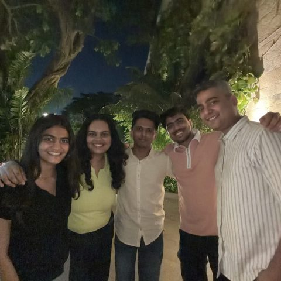
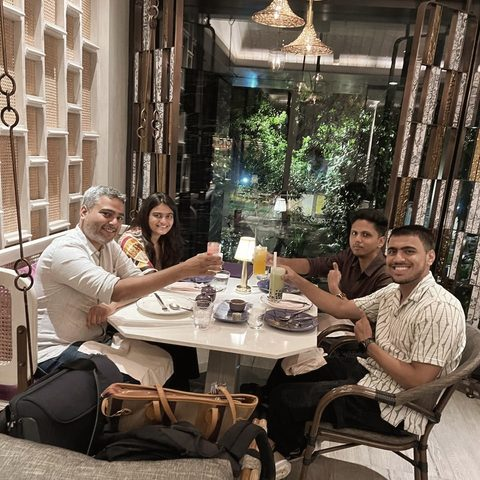
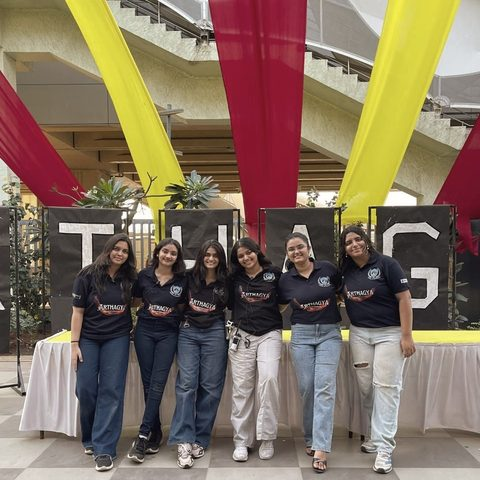
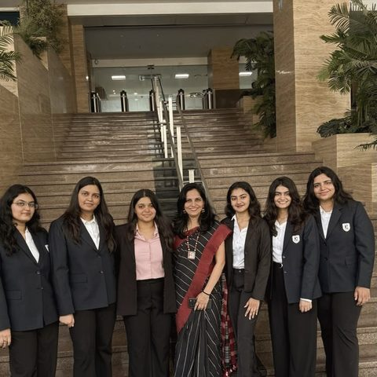
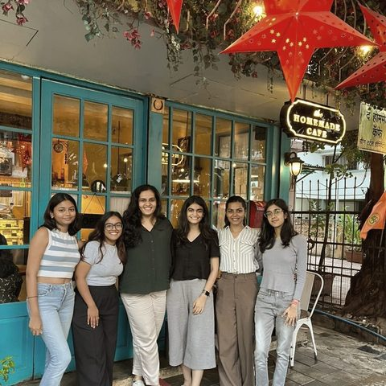
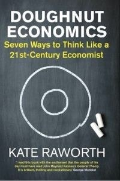
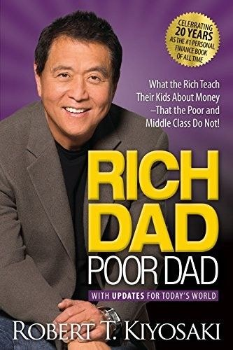
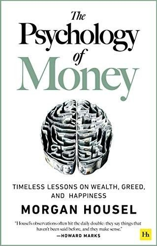
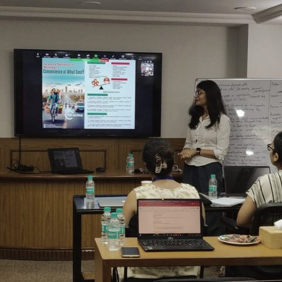
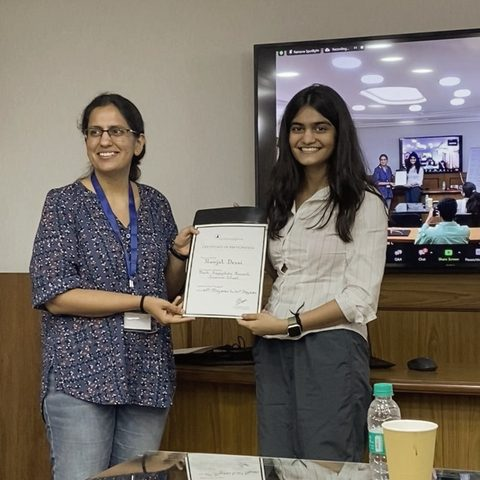

A degree hands you the tools. Becoming an economist means learning to connect what rarely stays in one box: data and behaviour, markets and policy, models and the people living with their consequences. I'm building that way of seeing the world, one question at a time, and writing down what I learn.
Connecting data.
01About
Most economic writing is either too technical to reach anyone or too simple to be true. I try to sit in between.
I studied economics at NMIMS and spent my first few years learning what the discipline looks like outside a classroom — regulatory frameworks and compliance work at EY, fieldwork and survey design at BIAS, and then a year on my own with fifteen years of RBI data, asking who India's growth after 2014 actually reached. Short answer: in the states we call success stories, not everyone.
This year I've been closing the distance between economics and tech. Python and data analysis on Coursera, Claude 101, and a FinTech & AI certification at IIM Trichy — not because economics needs rescuing by software, but because most of the questions I find interesting now arrive as data problems first. The biggest of them: what happens to markets, jobs and incentives when machines can think? AGI changes everything the discipline studies — labour markets, productivity, inequality, monetary policy. Economics deserves a bigger seat at that table, and I'd like to help pull up a chair.
Most recently I was at Equilibrium Insights, a market research and consumer insights firm in Mumbai, where we built a SaaS platform that takes primary research — a process still largely held together by spreadsheets, phone calls and goodwill — and makes it methodical, on the client side and the respondent side both. I tested the tool and worked with the tech team on where it went next, including its interface and the socio-economic case we built around it. Alongside that I ran client projects end to end: research questions and discussion guides, coordinating recruiters and field agents, conducting the interactions, then analysing, drafting and presenting what we found.
What I took from all of it: consumer insight is an economic question, not only a reported one. Economics tends to turn up everywhere, once you start looking for it. The work has taught me to ask who a decision changes things for, what the data misses, and how to explain the answer without losing the people inside it.
Finishing the FinTech & AI certification at IIM Trichy. Writing essays on Indian economic policy, inequality and markets.
02Research
Independent research · 2006–2021 panel
India got richer after 2014. I wanted to know who did.
I built a panel dataset covering six major states over fifteen years from the RBI Handbook of Statistics, then ran fixed-effects regression, Gini estimation via variance of logarithms, and Lorenz curve analysis, validating model selection with a Hausman test.
The finding was uncomfortable. In the industrially advanced states — Karnataka, Gujarat — post-2014 reforms deepened inequality rather than easing it. Manufacturing's equalising effect weakened, while capital-intensive industry and services pulled the distribution apart.
·Experience
A research firm building the software it wished existed.
I worked across both halves. On the product: testing the platform, working with the tech team on direction, and shaping the interface and the socio-economic case behind it. On the work itself: research questions and discussion guides, recruiter and field-agent coordination, conducting interactions, analysis, and presenting insights to clients.


Grew the team from 15 to 48 members. Ran 120+ posts reaching 1M+ digital impressions. Founded Arthagya 1.0, the institute's first economics fest. Published Median magazine and the Prism annual report.


Behavioural economics at ground level.
Ran survey instruments for a client study on how households actually choose atta, and supervised a fieldwork team across multiple locations at a 95%+ completion rate. Good primary data is a logistics problem before it's an analytical one.

Two months inside how financial regulation actually gets enforced.
Researched frameworks for primary dealers, MSMEs and fixed-income money markets, and presented a comparative read on interest rate policy to the audit team. Also spent a stretch cross-referencing voice-recorded trades on a Goldman Sachs compliance engagement — unglamorous, and the fastest education in why paperwork matters.
Earlier roles across committees
Ran 100+ Instagram posts. Designed the Median magazine and the Prism newsletter.
Executed "The Battle of Burns" and managed offline events.
Event Head of "Monopoly Rush", from ideation to hosting.
Designed the club bulletin "Glare".
03Writing
Latest on LinkedIn
04Books

This is the book behind my essay on why growth is the wrong finish line. Raworth asks the question economics forgot to keep asking: what is the economy actually for?

The first book that made me question what school never taught me about money. The asset-versus-liability idea is simple enough to feel obvious, and that is exactly why it sticks: once you see it, you cannot unsee it. Read it early, argue with it as you grow, but read it.

This one quietly rewired how I think about decisions. Housel's point — that doing well with money has little to do with how smart you are and everything to do with how you behave — felt like permission to be human. I came away kinder to my own mistakes and more suspicious of my own certainty.
·Skills
Primary & Secondary Research; Econometric Modeling; Qualitative Research (In-Depth Interviews, Focus Groups); Qualitative Analysis; Survey Design; Panel Data Analysis; Regression Analysis; Statistical Testing; Data Visualization; Financial Analysis.
Product Operations; QA Testing; Market Intelligence.
Cross-functional project management; working with founders and developers; supervising fieldwork teams; writing and presenting client insights.
·Certifications


·Education
05Contact